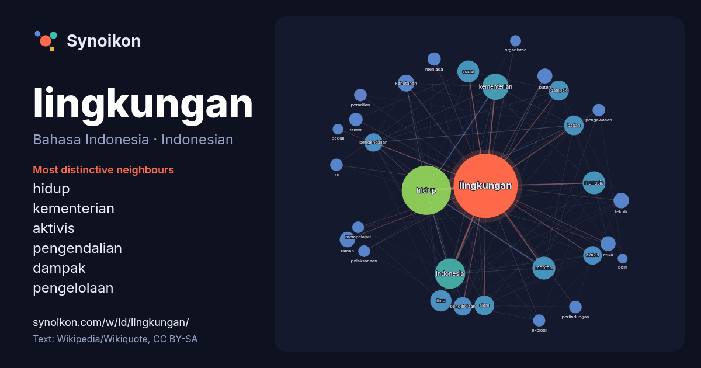

Bahasa Indonesia · Indonesian · popular word
lingkungan
“environment” · The words found around it in 1397 instances from Indonesian Wikipedia, Wikiquote.

Most distinctive neighbours
- hidup 52×
- kementerian 47×
- aktivis 33×
- pengendalian 32×
- dampak 31×
- pengelolaan 31×
- kehutanan 30×
- etika 24×
- ramah 24×
- puteri 22×
- menteri 21×
- peradilan 18×
- badan 18×
- ilmu 18×
- sosial 17×
- ekologi 17×
- isu 16×
- pengawasan 15×
- alam 15×
- faktor 13×
× = how many times more often than in general Indonesian Wikipedia text.
Most frequent neighbours
- hidup 295
- indonesia 112
- kementerian 84
- menteri 64
- manusia 63
- sosial 58
- ilmu 55
- dampak 49
- alam 47
- badan 47
- aktivis 42
- pengelolaan 41
- pengendalian 40
- negara 35
- bidang 34
- kehutanan 34
- masyarakat 33
- perubahan 29
- ramah 29
- teknik 29
In context
- ciptaan manusia seperti keputusan bagaimana menggunakan lingkungan fisik tersebut. Lingkungan juga memiliki arti segala sesuatu yang ada disekitar manusia Wikipedia snippets · Lingkungan
- Kepala Kepolisian Negara (KKN). Pada awalnya kepolisian berada dalam lingkungan Kementerian Dalam Negeri dengan nama Djawatan Kepolisian Negara yang hanya Wikipedia snippets · Kepolisian Negara Republik Indonesia
- Heryawan mengusung konsep Green Policing yakni model Kepolisian yang peduli lingkungan dan budaya lokal. Di bawah moto “Melindungi Tuah, Menjaga Marwah,” Polda Wikipedia snippets · Herry Heryawan
- Polisi. Sering digunakan penyebutan Komjen. Pol. untuk pangkat ini. Dalam lingkungan Polri, Komjen Pol menduduki jabatan Wakil Kepala Kepolisian Negara Republik Wikipedia snippets · Komisaris Jenderal Polisi
- Lingkungan hidup adalah segala sesuatu yang ada di sekitar manusia dan berhubungan timbal balik. Lingkungan hidup adalah sistem yang merupakan kesatuan Wikipedia snippets · Lingkungan hidup
- Kementerian Lingkungan Hidup/Badan Pengendalian Lingkungan Hidup Republik Indonesia disingkat KLH/BPLH adalah kementerian yang menyelenggarakan urusan Wikipedia snippets · Kementerian Lingkungan Hidup/Badan Pengendalian Lingkungan Hidup Republik Indonesia
- badan peradilan dalam lingkungan peradilan umum, lingkungan peradilan agama, lingkungan peradilan tata usaha negara dan lingkungan peradilan militer. Masa Wikipedia snippets · Mahkamah Agung Republik Indonesia
- Sosiologi lingkungan didefinisikan sebagai cabang sosiologi yang memusatkan kajiannya kepada keterkaitan antara perilaku sosial manusia dengan lingkungan. Definisi Wikipedia snippets · Sosiologi lingkungan
More Indonesian words
- air
- anjing
- bahasa
- emas
- iklim
- jantung
- jembatan
- kebenaran
- kehidupan
- kekuasaan
- keluarga
- kematian
- kereta
- kerja
- kesehatan
- kesenian
- kucing
- makanan
- sains
- sejarah
- tuhan
- uang
Precomputed on 2026-10-09 with default settings (±5 words, medium corpus). The interactive map can refresh it with live data.